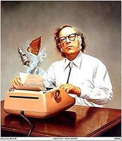

2 января – Азимов Айзек
Знаменитый американский писатель-фантаст и популяризатор науки, Айзек Азимов (2 января 1920- 6 апреля 1992) родился в местечке Петровичи Шумячского района – одном из самых старинных населённых пунктов Смоленщины. Летом 1923 года, когда Азимову было 3 с половиной года, по семейным обстоятельствам родители выехали в Америку к родственникам. Писать рассказы он начал с 11 лет. После окончания Колумбийского университета с 1948 года преподавал биохимию в Бостонском университете. В 1958 году полностью посвятил себя писательскому труду, создав около 500 книг, более 400 рассказов и статей. Был неоднократным (249 титулов) лауреатом самых престижных премий в области научной фантастики. Творчество А. Азимова основано на гуманистических идеалах и даре научного предвидения. Например, в одном из интервью 1988 года он практически предсказал появление интернета, описав систему, при которой студенты получат доступ к универсальному источнику информации, попадая через компьютеры в любую библиотеку мира («компьютер станет учителем в форме доступа ко всем накопленным человечеством знаниям»).
Желание Азимова побывать на родине не сбылось, хотя с военных лет Петровичи были особо
отмечены на его карте. А 43 родственника Азимовых из Петровичей были казнены фашистами в
1942 году. Место, где стоял дом родителей Айзека, по сей день называется Азимовщиной:
 4 июня 1998 года здесь был открыт скромный памятный знак. Музея в Петровичах нет.
В библиотеке и школе постоянно действуют посвященные ему экспозиции. Очень
небольшим количеством материалов располагает художественно-краеведческий
музей в Шумячах: письма знаменитого земляка соотечественникам, статьи, переводы.
4 июня 1998 года здесь был открыт скромный памятный знак. Музея в Петровичах нет.
В библиотеке и школе постоянно действуют посвященные ему экспозиции. Очень
небольшим количеством материалов располагает художественно-краеведческий
музей в Шумячах: письма знаменитого земляка соотечественникам, статьи, переводы.